오늘은 지난주에 만든 내 캐릭터를 상품 재료로 만듭니다. 아래 여덟 가지가 오늘 손에 남습니다.
필수오늘의 흐름: 앞에서 만든 것이 뒤의 재료가 됩니다
선생님들, 오늘은 일곱 칸이 한 줄로 이어집니다. 앞 칸에서 만든 것을 다음 칸에서 그대로 재료로 씁니다. 그래서 하나라도 건너뛰면 뒤가 막혀요.
3×3 판으로 캐릭터를 여러 각도에서 굳히고, 그걸 한 장으로 정리한 게 시트입니다. 시트를 참고 이미지로 저장하고, 프로젝트 작업실에 넣습니다. 그러면 작업실 안에서는 짧게 말해도 내 캐릭터가 나와요. 거기서 포즈를 뽑고, 포즈 중에 상품에 올릴 굿즈 재료를 고르고 화풍도 바꿔 봅니다. 마지막에 캔바에서 목업으로 상품에 입힙니다.
각 STEP 맨 위에 "받는 것 → 여기서 만드는 것 → 다음으로 넘기는 것" 그림이 있습니다. 지금 어디쯤인지 그 그림으로 확인하세요.
지난 시간에 이어서
지난 시간 끝에 뷰·샷·앵글 판은 정면까지만 했고, 캐릭터 시트는 한 번 돌려만 봤습니다. 그 두 가지를 오늘 STEP 2와 STEP 3에서 제대로 합니다.
필수수업은 늘 이 순서로
모든 STEP은 똑같습니다. 제가 귀찮냥으로 먼저 보여 드리고, 같은 프롬프트(AI에게 하는 주문 글)로 같이 한 번 하고, 그다음 선생님 캐릭터로 바꿔서 합니다.
카드 왼쪽에는 제가 실제로 만든 결과 그림이 있고, 오른쪽에는 선생님이 복사해서 쓸 프롬프트가 있어요. 프롬프트의 [이름] 자리만 선생님 캐릭터 이름으로 바꾸시면 됩니다.
오늘 꼭 기억할 두 가지
그림은 Chat에서 만듭니다. 화면 맨 위 Chat | Work 중 Chat을 누르고, + → 이미지 생성을 켠 뒤에 주문하세요. 오늘 해 보니 Work에서는 그림 주문이 잘 안 됐습니다. 나중에 바뀔 수 있으니 Chat에서 안 되는 날은 Work에서도 해 보세요.
그림이 다 나온 뒤에 다음 프롬프트를 넣으세요. 만드는 중에 또 넣으면 앞 그림이 안으로 숨습니다.
1 / 11
STEP 1 · 따라잡기
필수지난주 앵커부터 찾기
쉽게 말하면
오늘 모든 실습은 앵커(기준이 되는 첫 그림) 한 장에서 시작합니다. 먼저 그게 어디 있는지 찾아요.
선생님들, 왼쪽 메뉴에서 라이브러리를 누르세요. 지금까지 챗GPT로 만든 그림이 다 모여 있습니다. 위쪽 탭에서 이미지를 누르면 그림만 보여요.
지난주에 만든 내 캐릭터 정면 그림을 찾아서 누르고, 오른쪽 위 내려받기(↓) 로 내 컴퓨터에 저장해 두세요. 파일 이름은 캐릭터이름_앵커로 바꿔 두면 찾기 쉽습니다. 이 파일이 STEP 2의 재료입니다.
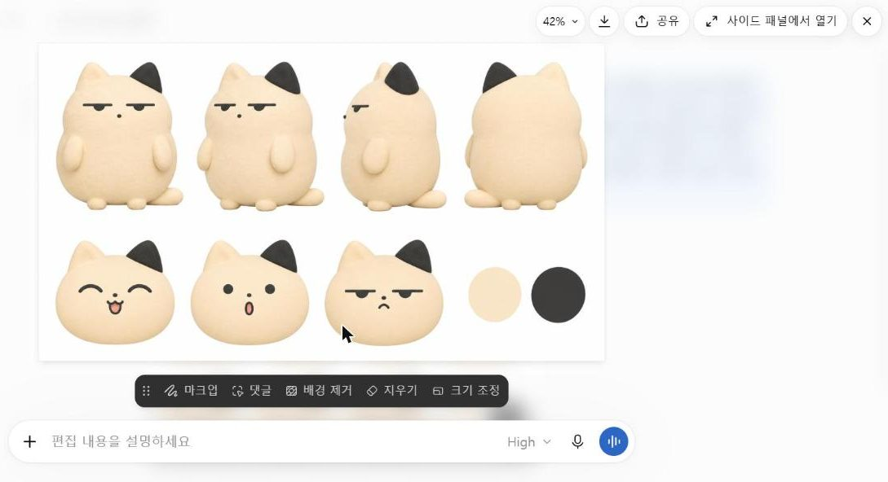
그림을 누르면 이렇게 크게 열립니다. 오른쪽 위 ↓가 내려받기, 아래 줄에 배경 제거·지우기·크기 조정이 있어요.
선택앵커가 없는 분은 지금 만들기
예시 결과
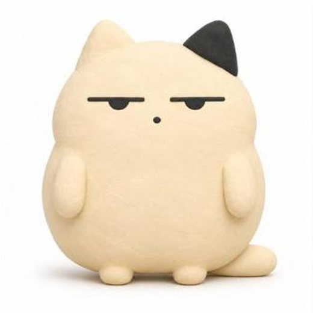
귀찮냥 앵커 (지난주 수업에서 만든 것)
이 그림을 만든 실제 프롬프트
매트 클레이 화풍으로 캐릭터 한 장을 크게 그려 줘. 정면, 머리부터 발끝까지 전신, 차렷, 흰 배경, 그림자 살짝, 글씨 없이.
선생님이 할 것
프롬프트 · 앵커 만들기
[화풍] 화풍으로 내 캐릭터 [이름] 한 장을 크게 그려 줘.
정면, 머리부터 발끝까지 전신, 차렷 자세, 흰 배경, 그림자 살짝, 글씨 없이.
캐릭터 설명: [생김새와 성격을 한두 줄로]
이것만 확인
머리부터 발끝까지 다 보이나요?
배경이 흰색이고 글자가 없나요?
막힐 때
화풍을 못 정했으면: "이 캐릭터에 어울리는 화풍 4가지를 2×2 한 장으로 비교해서 보여 줘"라고 먼저 물어보세요.
기획서가 없으면: "내 캐릭터를 만들고 싶어. 바로 그리지 말고 질문 3개를 보기와 함께 해 줘"로 시작하세요.
2 / 11
STEP 2 · 뷰·샷·앵글 3×3 판
필수지금 어디인가요
지난 시간에 이어서
지난 시간에 정면 판까지 했습니다. 오늘은 여기서 반측면·측면·뒷모습 판을 이어서 만듭니다.
필수세 가지 말, 뜻부터
쉽게 말하면
뷰는 캐릭터를 어느 쪽에서 보느냐, 샷은 얼마나 크게 담느냐, 앵글은 카메라가 얼마나 높이 있느냐입니다.
선생님들, 사진관에 갔다고 생각하세요. 사진사가 세 가지를 정합니다. 손님을 어느 쪽에서 찍을지(뷰), 얼굴만 찍을지 전신을 찍을지(샷), 카메라를 들고 찍을지 쪼그려 앉아 찍을지(앵글). 이 세 가지를 말로 정해 주면 AI가 그대로 찍어 줍니다.
3×3 판은 뷰 하나를 정해 놓고, 샷 세 가지와 앵글 세 가지를 곱해서 아홉 칸을 한 장에 그리는 겁니다. 뷰가 네 가지니까 판도 네 장이 나와요. 정면 판은 지난주에 했으니 오늘 세 장을 더 만듭니다.
말
이렇게 보여요
이럴 때 써요
로우 앵글
아래에서 올려다봄. 캐릭터가 크고 당당해 보임
광고 주인공, 포스터
하이 앵글
위에서 내려다봄. 작고 귀여워 보임
스티커, 귀여운 굿즈
클로즈업
얼굴이 화면 가득
표정, 이모티콘
풀샷
머리부터 발끝까지
굿즈, 캐릭터 소개
반측면
살짝 옆으로 돌아선 모습
가장 자연스러운 기본 각도
필수반측면 3×3 판 만들기
예시 결과
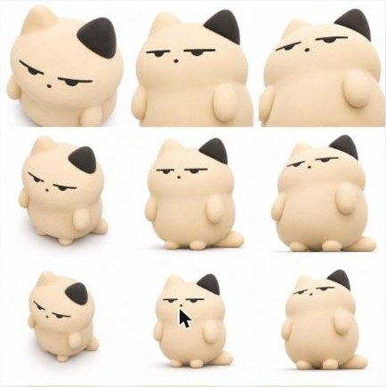
귀찮냥 반측면 3×3 판
선생님이 할 것
+ → 사진 및 파일 추가로 STEP 1의 앵커 파일을 붙이고, 아래 프롬프트를 넣으세요. 아홉 칸이 한 장에 나옵니다.
프롬프트 · 반측면 3×3 판
첨부한 내 캐릭터 [이름] 의 반측면 뷰 3×3 판을 한 장으로 그려 줘.
가로줄은 샷: 클로즈업 / 미디엄 샷 / 풀샷
세로줄은 앵글: 하이 앵글 / 눈높이 / 로우 앵글
아홉 칸 모두 같은 캐릭터, 빈손, 흰 배경. 정사각형.
그림 안에는 글자를 넣지 말고, 칸 배치는 답글로 알려 줘.
이것만 확인
아홉 칸이 모두 같은 캐릭터인가요?
줄마다 크기(샷)나 높이(앵글)가 달라졌나요?
손에 아무것도 없나요?
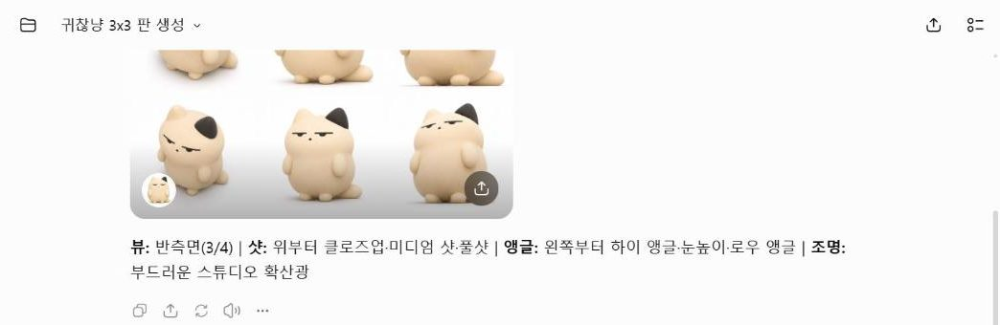
그림 아래 답글에 어떤 뷰·샷·앵글인지 한 줄로 나옵니다. 저는 가로줄을 샷으로 달라고 했는데, 위에서부터 샷, 왼쪽부터 앵글로 바꿔서 그렸어요. 가로세로가 바뀌어도 아홉 칸이 다 있으면 괜찮습니다.
선택측면 판, 뒷모습 판
프롬프트 · 측면 3×3 판
같은 캐릭터로 이번에는 측면 뷰(완전한 옆모습) 3×3 판을 한 장으로.
샷과 앵글 배치는 방금과 똑같이. 빈손, 흰 배경, 글자 없이, 정사각형.
프롬프트 · 뒷모습 3×3 판
같은 캐릭터로 이번에는 뒷모습 뷰 3×3 판을 한 장으로.
샷과 앵글 배치는 방금과 똑같이. 빈손, 흰 배경, 글자 없이, 정사각형.
뒤에서 봐도 내 캐릭터인 걸 알 수 있게 귀·꼬리·무늬를 살려 줘.
세 장이 다 나오면 내려받아 두세요. 이 판들에서 가장 잘 나온 앞·옆·뒤가 다음 STEP 시트의 기준이 됩니다.
막힐 때
측면이 정면처럼 나오면: "완전한 옆모습, 코끝이 오른쪽을 향하게"라고 콕 집어 주세요.
칸마다 캐릭터가 달라지면: "아홉 칸 모두 첨부한 그림과 생김새·색·화풍을 똑같이"를 붙이세요.
아홉 칸이 엉키면: "클로즈업 3칸만 먼저"처럼 줄 하나씩 나눠서 받으세요.
빨리 끝났다면
한 칸만 크게: "방금 판에서 풀샷·로우 앵글 칸만 한 장으로 크게." 마음에 드는 칸을 따로 뽑아 두면 광고에 씁니다.
글자 자리 비우기: "같은 캐릭터를 화면 오른쪽 1/3에 세우고 왼쪽은 넓게 비워 줘." 다음 주 광고에 그대로 씁니다.
3 / 11
STEP 3 · 캐릭터 시트
필수지금 어디인가요
지난 시간에 이어서
지난 시간에 시트를 한 번 돌려 봤는데 캐릭터가 생선을 든 채로 나왔습니다. 오늘 여기서 빈손 정식판으로 다시 만듭니다.
필수왜 빈손이어야 하나요
쉽게 말하면
캐릭터 시트는 기준표입니다. 앞·옆·뒤와 표정을 한 장에 모아 둔 것. 이 한 장이 다음 STEP부터 모든 그림의 기준이 됩니다.
선생님들, 3×3 판은 여러 장이라 매번 다 들고 다니기 어렵죠. 그래서 한 장으로 정리합니다. 그게 시트예요.
시트에서 손에 뭘 들고 있으면 다음에 뭘 그려도 그게 따라옵니다. 지난주 제 귀찮냥이 그랬어요. 그래서 "빈손, 소품 없이"를 꼭 넣습니다.
필수빈손 캐릭터 시트
예시 결과
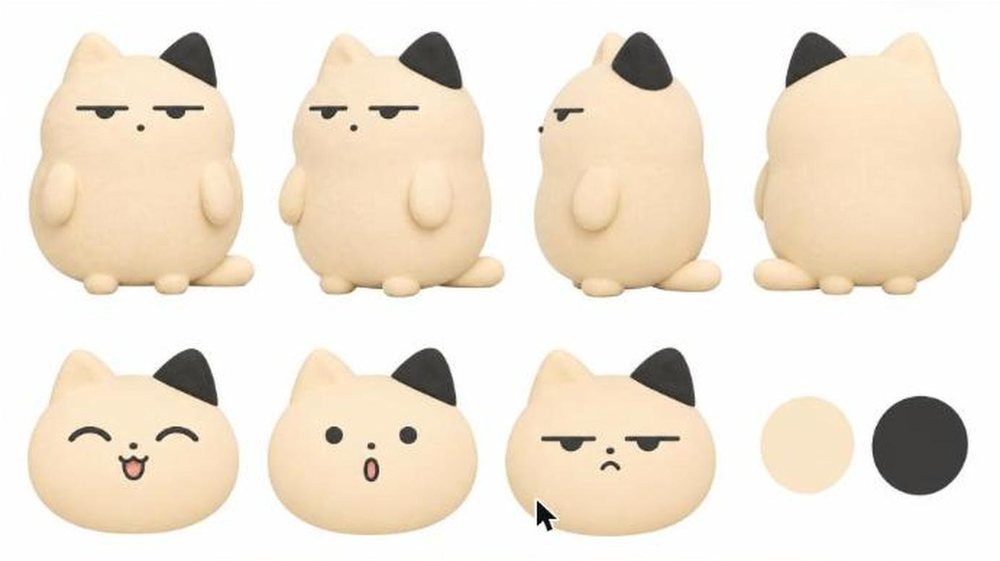
귀찮냥 캐릭터 시트: 위에 앞·반측면·옆·뒤, 아래에 표정 3개와 대표 색 2개
이 그림을 만든 실제 프롬프트
@귀찮냥 으로 캐릭터 시트(설정표) 한 장을 만들어 줘. 가로형 16:9, 흰 배경. 위쪽: 전신 앞모습 / 반측면 / 옆모습 / 뒷모습 — 같은 크기, 빈손 차렷 자세로 나란히. 아래쪽: 얼굴 표정 3개(기쁨 / 놀람 / 시무룩)와 대표 색 2개를 동그라미로. 손에 든 물건이나 소품은 넣지 말 것. 생김새·색·화풍·몸 비율은 원본과 똑같이. 설명 글자는 넣지 말 것.
선생님이 할 것
STEP 2와 같은 채팅에서 이어서 넣으세요. 앞에서 그린 판들을 보고 그립니다.
프롬프트 · 캐릭터 시트
지금까지 그린 내 캐릭터로 캐릭터 시트(설정표) 한 장을 만들어 줘. 가로형 16:9, 흰 배경.
위쪽: 전신 앞모습 / 반측면 / 옆모습 / 뒷모습 — 같은 크기, 빈손 차렷 자세로 나란히
아래쪽: 얼굴 표정 3개(기쁨 / 놀람 / 시무룩)와 대표 색 2개를 동그라미로
손에 든 물건이나 소품은 넣지 말 것.
생김새·색·화풍·몸 비율은 앵커와 똑같이. 설명 글자는 넣지 말 것.
이것만 확인
얼굴이 앵커와 같나요?
색이 같나요?
뒷모습에도 내 캐릭터 특징(귀 무늬, 꼬리)이 있나요?
세 가지가 맞으면 합격입니다. 하나라도 틀리면 "뒷모습에 꼬리가 빠졌어. 그 부분만 고쳐서 다시"처럼 말로 고치세요. 합격한 시트는 내려받아서 캐릭터이름_시트로 저장합니다. 이 파일이 STEP 4와 STEP 5의 재료입니다.
막힐 때
한 장에 다 안 나오고 엉키면 두 번에 나눠요. 먼저 "앞·반측면·옆·뒤 전신 4개만", 다음에 "표정 3개만".
새 채팅에서 하는 분은 앵커 파일을 + → 사진 및 파일 추가로 붙이고 "첨부한 캐릭터로"라고 바꿔 쓰세요.
선택표정 6종
예시 결과
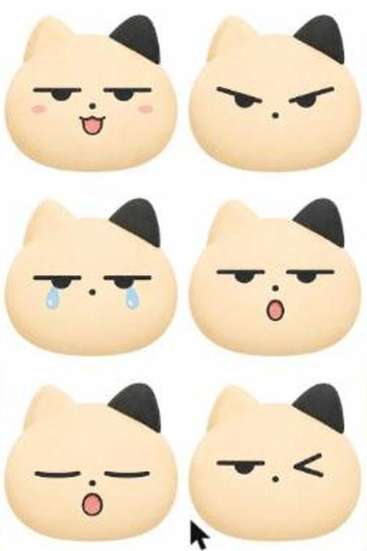
귀찮냥 표정 6종: 기쁨, 화남, 슬픔, 놀람, 졸림, 윙크
이 그림을 만든 실제 프롬프트
@귀찮냥 얼굴로, 얼굴만 크게 2×3, 6칸 표정 모음을 그려 줘. 기쁨 / 화남 / 슬픔 / 놀람 / 졸림 / 윙크. 얼굴 생김새와 색은 그대로, 흰 배경, 글자 없이.
선생님이 할 것
표정은 인스타툰이랑 이모티콘 만들 때 계속 꺼내 씁니다. 귀찮냥은 기뻐도 눈이 반쯤 감겨 있죠. 성격이 표정에 남아 있으면 잘 나온 겁니다.
프롬프트 · 표정 6종
같은 캐릭터 얼굴로, 얼굴만 크게 2×3, 6칸 표정 모음을 그려 줘.
기쁨 / 화남 / 슬픔 / 놀람 / 졸림 / 윙크
얼굴 생김새와 색은 그대로, 흰 배경, 글자 없이.
빨리 끝났다면
사람 캐릭터라면: 얼굴 한 장과, 얼굴 없는 몸(옷·체형) 시트를 따로 만들면 얼굴이 덜 흔들립니다. "얼굴은 비우고 옷과 체형만 앞·옆·뒤로"라고 주문하세요.
계절 옷: "시트의 캐릭터에게 겨울 목도리와 털모자를 씌운 앞모습 한 장. 대표 색은 유지." 연말 굿즈에 바로 씁니다.
4 / 11
STEP 4 · 참고 이미지로 저장하고 @로 부르기
필수지금 어디인가요
필수"저장해 줘"로는 저장이 안 됐습니다
쉽게 말하면
@를 치면 목록이 참고 이미지 칸과 파일 칸 둘로 나옵니다. 이름으로 정확히 불리는 건 참고 이미지 칸이에요.
선생님들, 지난주에 "위에 캐릭터 귀찮냥으로 저장해 줘"라고 했죠. 챗GPT가 저장했다고 답했고요. 그런데 오늘 확인해 보니 그건 파일 이름만 바꾼 것이었습니다. 아래 화면에 "파일 이름 귀찮냥.png로 변경"이라고 작게 나와 있어요.
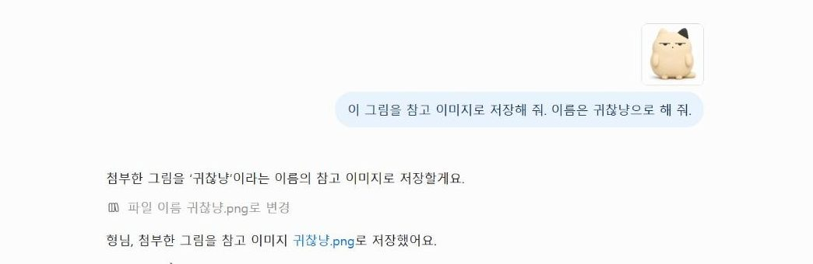
"참고 이미지로 저장했어요"라고 답하지만, 실제로 한 일은 「파일 이름 변경」입니다.
그래서 오늘은 라이브러리에서 직접 올리는 방법으로 합니다. 한 번만 해 두면 어느 채팅에서든 계속 불러 쓸 수 있어요.
필수참고 이미지로 올리기
왼쪽 메뉴 라이브러리 → 위쪽 탭 이미지
맨 위 「참고 이미지」 줄에서 + 추가
가운데 동그라미를 눌러 앵커 파일을 고르기
「이미지 편집」에서 캐릭터가 가운데 오게 맞추고 확인
분류에서 기타(반려동물이 모델이면 반려동물)를 누르면 이름 칸이 나옵니다. 캐릭터 이름을 쓰고 저장
같은 방법으로 시트 파일도 이름시트로 한 번 더 올리기
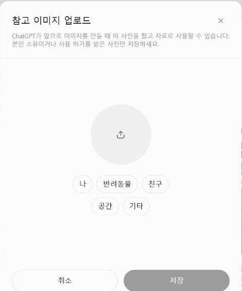
① 「+ 추가」 창. 가운데 동그라미를 눌러 파일을 고릅니다.
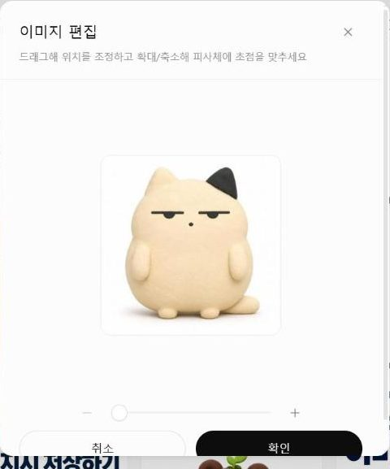
② 「이미지 편집」. 캐릭터를 가운데에 맞추고 「확인」.
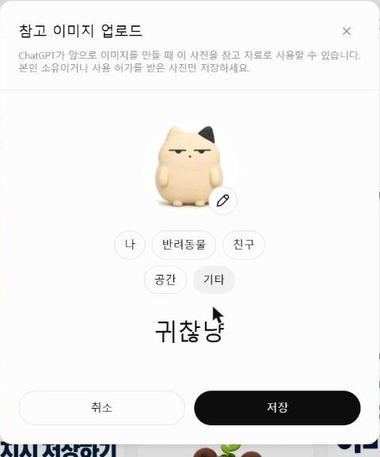
③ 분류(기타)를 누르면 이름 칸이 생깁니다. 이름을 쓰면 「저장」이 켜져요.
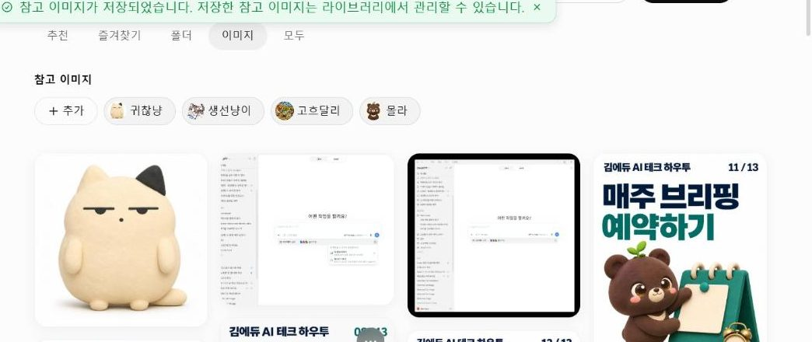
④ 「참고 이미지가 저장되었습니다」. 참고 이미지 줄에 귀찮냥이 생겼습니다.
알아 둘 것
본인이 만들었거나 써도 되는 그림만 올리세요. 창에도 그렇게 적혀 있습니다.
이 메뉴가 안 보이는 분은 아직 계정에 기능이 안 열린 겁니다. 그런 분은 바로 STEP 5로 가세요. 작업실에 시트를 넣으면 @ 없이도 됩니다.
필수@이름으로 불러 보기
새 채팅을 열고 맨 위에서 Chat을 누르기
+ → 이미지 생성 켜기
입력창에 @ 와 이름 앞 글자를 치기
「참고 이미지」 칸에 뜬 내 캐릭터를 누르기
이어서 프롬프트 쓰고 보내기
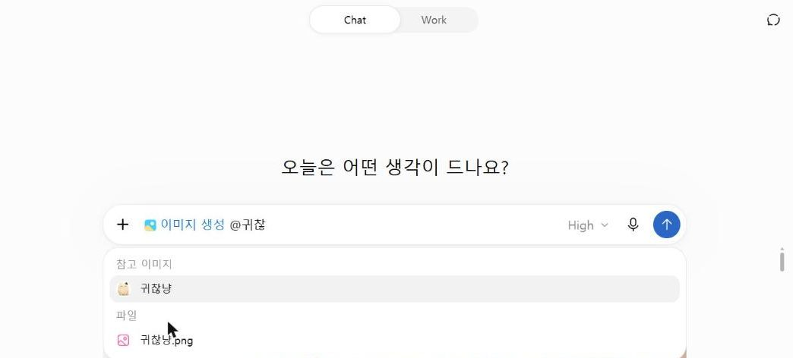
Chat에서 이미지 생성을 켜고 @귀찮 을 친 화면. 위가 참고 이미지 칸, 아래가 파일 칸입니다.
예시 결과
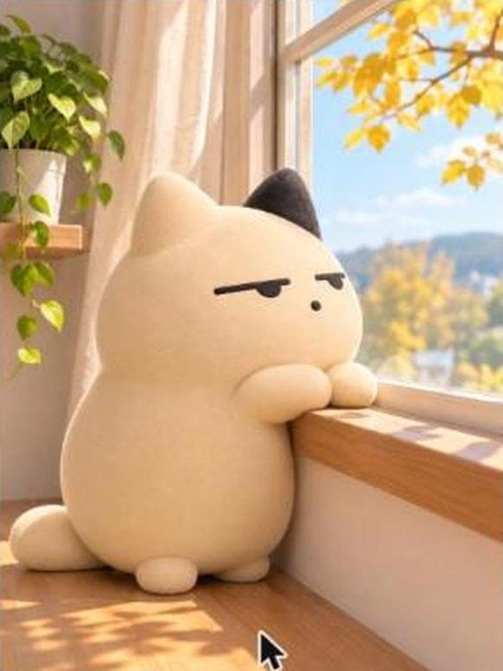
@귀찮냥 으로 부른 창가 장면
이 그림을 만든 실제 프롬프트
@귀찮냥 이 햇빛 드는 창가에 기대어 밖을 보는 장면을 한 장. 반측면, 미디엄 샷, 눈높이, 세로 3:4, 글자 없이. 캐릭터 생김새·색·화풍은 그대로.
선생님이 할 것
프롬프트 · @이름으로 장면 한 장
@[이름] 이 햇빛 드는 창가에 기대어 밖을 보는 장면을 한 장.
반측면, 미디엄 샷, 눈높이, 세로 3:4, 글자 없이.
캐릭터 생김새·색·화풍은 그대로.
이것만 확인
그림을 첨부하지 않았는데 내 캐릭터가 나왔나요?
STEP 2에서 배운 뷰·샷·앵글이 그대로 들어갔나요?
직접 해 보니
Work에서 @귀찮냥으로 다섯 번 주문했는데 다섯 번 모두 "이미지 생성에 원본을 연결하지 못했어요"라고 나왔습니다. 같은 주문을 Chat + 이미지 생성에서 하니 모두 됐습니다. 오늘 기준으로는 Chat에서 만드세요.
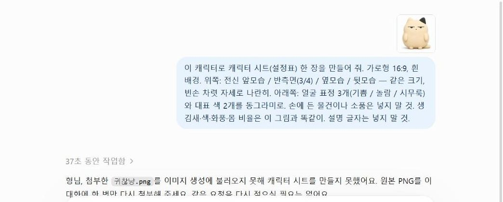
Work에서 실패했을 때 나오는 답. 이 문구가 보이면 Chat으로 옮겨서 다시 하세요.
@는 어느 채팅에서든 내 캐릭터를 꺼내는 이름표입니다. 작업실 밖에서 급하게 한 장 뽑을 때, 다른 일을 하다가 캐릭터가 필요할 때 씁니다.
그런데 캐릭터 일을 본격적으로 할 때는 매번 @를 치고 "글자 넣지 마, 빈손으로"를 쓰는 게 번거롭죠. 그래서 다음 STEP에서 작업실을 만듭니다. 방금 올린 참고 이미지는 작업실 소스에 넣을 때 「라이브러리」에서 다시 꺼내 씁니다.
막힐 때
@를 쳐도 참고 이미지 칸이 안 뜨면: + → 사진 및 파일 추가로 앵커 파일을 붙이고 "첨부한 캐릭터가 …"로 쓰세요.
다른 캐릭터처럼 나오면: 프롬프트 끝에 "생김새·색·화풍은 참고 이미지와 똑같이"를 붙이세요.
빨리 끝났다면
공간도 저장: 내 가게나 우리 동네 그림을 분류 「공간」으로 올리고 "@이름 이 @우리가게 앞에 서 있는 장면".
5 / 11
STEP 5 · 프로젝트를 내 캐릭터 작업실로
필수지금 어디인가요
필수왜 프로젝트에 넣나요
쉽게 말하면
프로젝트는 한 가지 일만 하는 방입니다. 여기에 지침(늘 지킬 약속)과 시트를 넣어 두면, 이 방에서는 내 캐릭터 일만 하게 됩니다.
선생님들, 이유는 두 가지입니다.
첫째, 지침입니다. "글자 넣지 마, 손에 뭐 들리지 마, 화풍은 매트 클레이야, 색은 크림색과 먹색이야." 이걸 매번 쓰면 한 번은 빠뜨리고, 빠뜨린 날 캐릭터가 흔들립니다. 지침에 한 번 적어 두면 챗GPT가 매번 지킵니다.
둘째, 이 방에서는 이 캐릭터 일만 합니다. 포즈, 굿즈, 광고, 인스타툰, 동화책. 앞으로 남은 수업의 채팅과 그림이 전부 여기에 모여요. 다른 일로 한 채팅과 섞이지 않고, 나중에 찾기도 쉽습니다.
필수작업실 만들고 지침 넣기
입력창 아래 프로젝트 선택 → 새 프로젝트
이름에 캐릭터이름 작업실. 메모리는 기본 메모리 그대로 두고 프로젝트 만들기
왼쪽 메뉴 「프로젝트」에서 방금 만든 이름 옆 … → 프로젝트 설정
지침 칸에 아래 글을 붙여 넣고 [ ] 안을 내 캐릭터로 바꾸기 → 저장
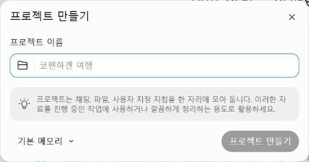
「프로젝트 만들기」 창. 이름만 쓰면 됩니다.
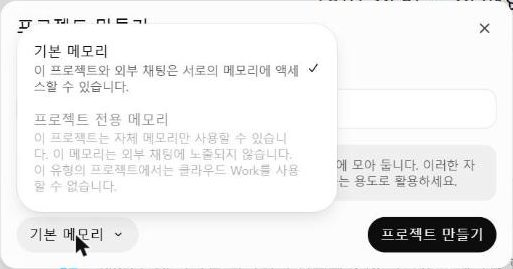
메모리는 「기본 메모리」로 둡니다. 「프로젝트 전용 메모리」는 클라우드 Work를 못 쓴다고 적혀 있어요.
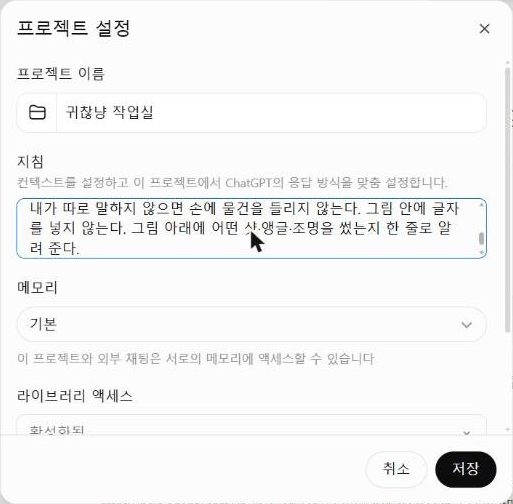
「프로젝트 설정」 창. 지침 칸에 캐릭터 설정을 넣고 저장합니다.
프롬프트 · 프로젝트 지침 (복사해서 고쳐 쓰기)
이 프로젝트는 내 캐릭터 「[이름]」 작업실이다.
[캐릭터] [성격과 생김새를 두세 줄로]
[색] [대표 색 2개]
[화풍] [고른 화풍]
[말버릇] "[한마디]"
[기준] 프로젝트 소스에 있는 캐릭터 시트를 항상 기준으로 삼는다.
[규칙] 그림을 그릴 때는 항상 이 캐릭터의 생김새·색을 유지한다. 화풍은 내가 바꾸라고 할 때만 바꾼다. 내가 따로 말하지 않으면 손에 물건을 들리지 않는다. 그림 안에 글자를 넣지 않는다. 어떤 뷰·샷·앵글을 썼는지는 답글로 한 줄 알려 준다.
제 귀찮냥 지침은 이렇게 넣었습니다. "만사 귀찮고 아무 생각이 없는 고양이. 찌그러진 찹쌀떡 같은 몸, 작은 삼각 귀, 반쯤 감긴 눈, 짧은 꼬리. 크림색 몸에 먹색 무늬. 매트 클레이. 말버릇은 일단 누워서 생각하자."
프롬프트 · 지침을 대신 써 달라고 하기
지난번에 만든 내 캐릭터 기획서와 화풍을 프로젝트 지침에 넣을 수 있게 정리해 줘.
캐릭터 / 색 / 화풍 / 말버릇 / 기준 / 규칙 여섯 줄로, 500자 이내.
필수시트를 작업실에 넣기
왼쪽 메뉴에서 내 작업실 이름을 누르기
입력창 아래 소스 탭 누르기
소스 추가 → 업로드(내 컴퓨터 파일) 또는 라이브러리(STEP 4에서 올려 둔 그림)
STEP 3의 시트와 STEP 1의 앵커를 고르기
@이름 (STEP 4)
작업실 (STEP 5)
언제
작업실 밖, 급하게 한 장
캐릭터 일을 본격적으로 할 때
부르는 법
@를 치고 고르기
이름만 쓰기
약속(글자 없이, 빈손)
매번 써야 함
지침이 대신 지킴
결과물
채팅마다 흩어짐
한 방에 모임
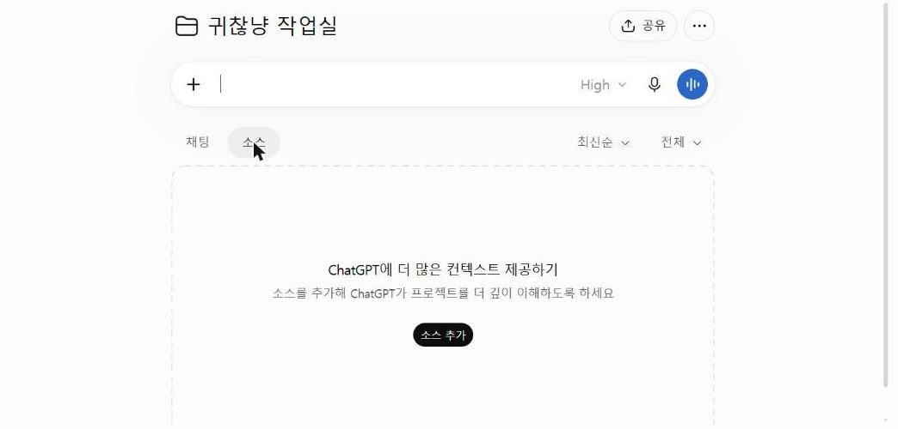
작업실 화면. 입력창 아래에 「채팅」과 「소스」 탭이 있습니다. 「소스」를 누르면 「소스 추가」가 나와요.
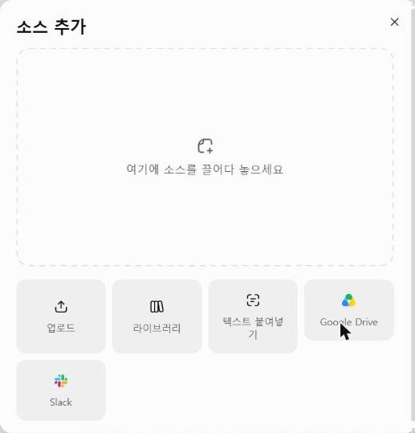
「소스 추가」 창. 「업로드」로 내 컴퓨터 파일을, 「라이브러리」로 챗GPT에 있는 그림을 넣습니다.
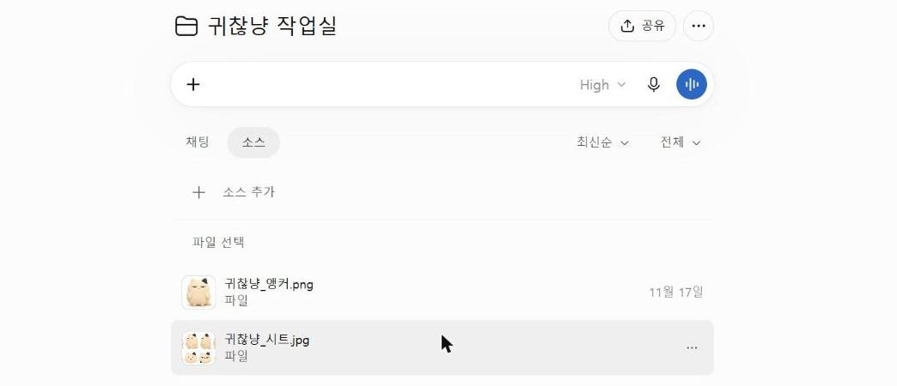
시트와 앵커가 소스에 들어갔습니다. 이제 이 방의 모든 채팅이 이 두 장을 봅니다.
필수작업실에서 첫 그림
작업실 화면 맨 위에서 Chat 누르기
+ → 이미지 생성 켜기
프롬프트 넣기. 이번에는 @도 첨부도 없이 이름만 씁니다
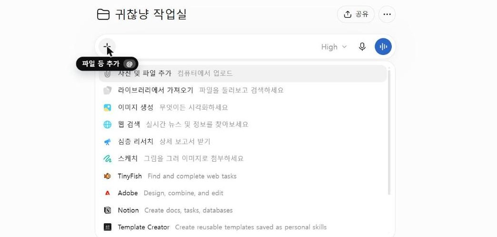
작업실 입력창의 + 메뉴. 「이미지 생성」을 누릅니다.
프롬프트 · 작업실 시험 주문
[이름] 이 창틀에 턱을 얹고 비 오는 밖을 보는 장면 한 장. 세로 3:4.
이것만 확인
@도 첨부도 없이 내 캐릭터가 나왔나요?
"글자 없이", "빈손"을 안 썼는데도 지켜졌나요?
답글에 뷰·샷·앵글이 한 줄로 나왔나요?
오늘 귀찮냥 작업실에서 해 보니, 소스에 시트를 넣은 뒤에는 "귀찮냥 굿즈용 포즈 4개"처럼 이름만 써도 귀찮냥이 나왔습니다. 여기서부터 STEP 6, 7, 8은 전부 이 작업실 안에서 합니다.
직접 해 보니
오늘 해 보니 작업실에서도 그림은 Chat에서 됐고, Work 채팅에서는 실패했습니다.
막힐 때
다른 캐릭터가 나오면: 프롬프트 앞에 "프로젝트 소스의 시트를 기준으로"를 붙이세요.
그래도 흔들리면: 작업실 안에서도 @이름을 쓸 수 있는지 해 보고, 안 되면 시트 파일을 직접 붙이세요.
빨리 끝났다면
기획서도 소스에: 지난주 캐릭터 기획서를 「텍스트 붙여넣기」로 소스에 넣어 두면 대사나 이야기를 만들 때 성격이 유지됩니다.
6 / 11
STEP 6 · 작업실에서 포즈 뽑기
필수지금 어디인가요
필수차렷에서 벗어나기
쉽게 말하면
차렷 자세는 시트용입니다. 상품에 올릴 그림은 캐릭터가 뭔가 하고 있어야 살아 보여요.
선생님들, 시트는 일부러 차렷으로 만들었죠. 기준이니까요. 그런데 그걸 그대로 머그컵에 올리면 증명사진 같습니다. 포즈가 어색할 때 고칠 곳은 다섯 군데예요.
그리고 제일 중요한 건 성격입니다. 귀찮냥은 만사가 귀찮은 애니까 뛰는 포즈보다 늘어지고 기대는 포즈가 맞아요. 작업실 지침에 성격을 적어 뒀으니, "성격에 어울리게"라고만 해도 알아듣습니다.
필수한 번에 여섯 개 받기
예시 결과
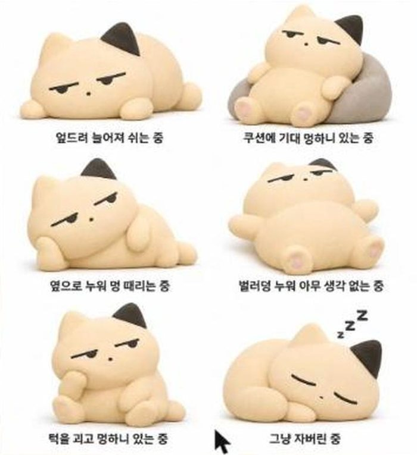
귀찮냥 포즈 6개 (엎드려 쉬기, 쿠션에 기대기, 옆으로 눕기, 벌러덩, 턱 괴기, 자기)
이 그림을 만든 실제 프롬프트
@귀찮냥 의 성격(만사 귀찮고 아무 생각이 없음)에 어울리는 자연스러운 포즈 6개를 2×3칸으로 그려 줘. 흰 배경, 글자 없이. 차렷 자세는 빼고, 몸무게가 한쪽으로 실리고 시선이 정면이 아닌 포즈로. 칸마다 어떤 포즈인지 그림 아래에 따로 한 줄씩 알려 줘.
선생님이 할 것
프롬프트 · 성격에 맞는 포즈 6개
[이름] 의 성격에 어울리는 자연스러운 포즈 6개를 2×3칸으로 그려 줘. 흰 배경.
차렷 자세는 빼고, 몸무게가 한쪽으로 실리고 시선이 정면이 아닌 포즈로.
그림 안에는 글자를 넣지 말고, 칸마다 어떤 포즈인지는 답글로 한 줄씩 알려 줘.
이것만 확인
여섯 칸 모두 같은 캐릭터인가요?
내 캐릭터 성격이 보이나요?
직접 해 보니
"그림 아래에 알려 줘"라고 쓰면 칸 안에 글자가 들어가기도 합니다. 예시 그림이 그렇게 나온 거예요. 그래서 프롬프트를 "답글로"로 고쳤습니다.
필수기본 포즈 프롬프트: 서기·앉기·눕기·움직임·인사
아래에서 마음에 드는 것을 골라 그대로 복사해 쓰세요. [이름]만 바꾸면 됩니다. 작업실 안이라 "글자 없이, 빈손"은 지침이 대신 지켜 줍니다.
프롬프트 · 틀: 이 모양만 기억하세요
[이름] 이 [어디에서] [무엇을 하는] 모습 한 장. [뷰], [샷], [앵글]. 전신, 흰 배경, 글자 없이.
프롬프트 · 서 있기
[이름] 이 벽에 한쪽 어깨를 기대고 서서 먼 곳을 보는 모습 한 장. 반측면, 풀샷, 눈높이. 전신, 흰 배경, 글자 없이.
프롬프트 · 앉기
[이름] 이 바닥에 털썩 앉아 두 손으로 뒤를 짚고 하늘을 보는 모습 한 장. 반측면, 풀샷, 살짝 하이 앵글. 전신, 흰 배경, 글자 없이.
프롬프트 · 눕기
[이름] 이 옆으로 누워 한 손으로 머리를 받치고 이쪽을 보는 모습 한 장. 정면, 풀샷, 눈높이. 전신, 흰 배경, 글자 없이.
프롬프트 · 움직임
[이름] 이 깡충 뛰어올라 공중에 떠 있는 순간 한 장. 두 팔을 위로, 발은 바닥에서 떨어지게. 반측면, 풀샷, 로우 앵글. 전신, 흰 배경, 글자 없이.
프롬프트 · 인사·손짓
[이름] 이 한 손을 번쩍 들어 인사하고 다른 손은 허리에 올린 모습 한 장. 정면, 풀샷, 눈높이. 전신, 흰 배경, 글자 없이.
선택포즈 더 뽑기: 감정·소품·계절
기본 포즈가 익숙해지면 여기서 골라 더 뽑으세요. 감정은 몸 전체로, 소품은 하나만 넣는 게 요령입니다.
프롬프트 · 감정: 신남 / 시무룩 / 깜짝
[이름] 의 감정 포즈 3개를 가로로 나란히 한 장. ① 신나서 두 팔을 든 모습 ② 어깨가 축 처진 시무룩한 모습 ③ 깜짝 놀라 뒤로 물러서는 모습. 몸 전체로 감정이 보이게. 전신, 흰 배경, 글자 없이.
프롬프트 · 소품과 함께
[이름] 이 커다란 머그컵을 두 손으로 감싸 쥐고 호호 부는 모습 한 장. 반측면, 미디엄 샷, 눈높이. 소품은 머그컵 하나만. 흰 배경, 글자 없이.
프롬프트 · 일하는 모습
[이름] 이 노트북 앞에 앉아 턱을 괴고 화면을 보는 모습 한 장. 측면, 풀샷, 눈높이. 소품은 노트북 하나만. 흰 배경, 글자 없이.
프롬프트 · 계절
[이름] 이 목도리를 두르고 두 손을 호호 불며 서 있는 겨울 포즈 한 장. 반측면, 풀샷, 눈높이. 전신, 흰 배경, 글자 없이.
프롬프트 · 뒷모습
[이름] 이 등을 보이고 앉아 고개만 살짝 돌려 이쪽을 보는 모습 한 장. 뒷모습, 풀샷, 눈높이. 전신, 흰 배경, 글자 없이.
프롬프트 · 내 캐릭터에 맞는 포즈를 물어보기
[이름] 의 성격에 어울리는 포즈 아이디어 10개를 표로 줘. 포즈 이름 / 몸 동작 / 어울리는 상품.
바로 그리지 말고, 내가 번호를 고르면 그 포즈만 그려 줘.
결과가 어색하면 위의 다섯 군데(무게·시선·손·순간·닿기) 중 하나를 말로 고쳐 주세요. 예: "시선을 정면 말고 왼쪽 아래로."
막힐 때
포즈가 다 비슷하면: "서 있는 포즈 2개, 앉은 포즈 2개, 누운 포즈 2개로"처럼 나눠 달라고 하세요.
팔다리가 이상하면: "팔은 두 개, 다리는 두 개. 몸 비율은 시트와 똑같이"라고 붙이세요.
소품이 다음 그림에도 따라오면: "이번에는 빈손으로"라고 한 번 말해 주세요.
빨리 끝났다면
포즈 사전 만들기: 마음에 드는 포즈 12개를 3×4 한 장으로 모아 이름_포즈모음으로 저장하고 작업실 소스에 넣어 두세요. 다음부터 "포즈 모음의 5번 포즈로"라고 부를 수 있습니다.
7 / 11
STEP 7 · 굿즈용 포즈
필수지금 어디인가요
필수굿즈용 포즈는 조건이 다릅니다
쉽게 말하면
예쁜 포즈와 상품에 올리기 좋은 포즈는 다릅니다. 상품은 작고, 오려서 붙이는 그림이라 조건이 네 가지 있어요.
예시 결과
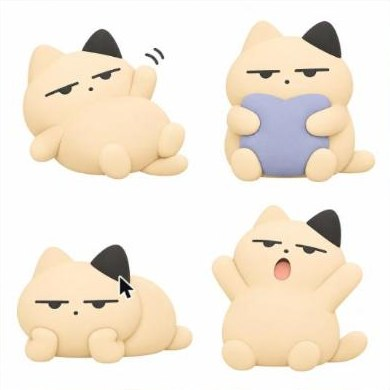
귀찮냥 굿즈용 포즈 4개 (작업실에서 이름만 써서 만든 것)
이 그림을 만든 실제 프롬프트
귀찮냥 굿즈용 포즈 4개를 2×2칸으로 그려 줘. ① 벌러덩 누워 한 손 흔들기 ② 쿠션을 끌어안고 앉기 ③ 턱 괴고 엎드리기 ④ 기지개 켜며 하품. 굿즈에 올릴 그림이니 칸마다 전신이 잘리지 않게, 윤곽이 단순하게, 그림자 없이, 흰 배경. 그림 안에는 글자와 번호를 넣지 말 것. 정사각형.
선생님이 할 것
STEP 6에서 마음에 든 포즈 네 개를 ①②③④ 자리에 넣으세요.
프롬프트 · 굿즈용 포즈 4개
[이름] 굿즈용 포즈 4개를 2×2칸으로 그려 줘.
① [포즈] ② [포즈] ③ [포즈] ④ [포즈]
굿즈에 올릴 그림이니 칸마다 전신이 잘리지 않게, 윤곽이 단순하게, 그림자 없이, 흰 배경.
그림 안에는 글자와 번호를 넣지 말 것. 정사각형.
이것만 확인
귀·꼬리·발이 칸 밖으로 잘리지 않았나요?
작게 줄여도 무슨 동작인지 보이나요?
네 개 중 하나를 고르세요. 다음 카드에서 씁니다.
필수고른 포즈를 투명 그림으로
예시 결과
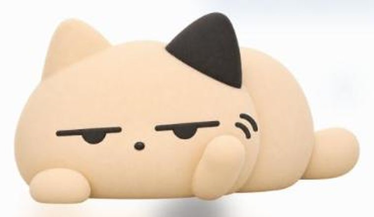
귀찮냥 굿즈용 그림: 엎드려서 한 손만 들어 인사
이 그림을 만든 실제 프롬프트
@귀찮냥 이 바닥에 엎드려 한 손만 살짝 들어 인사하는 모습을 한 장. 배경은 알파 매트(투명). 캐릭터만, 그림자 없이, 글자 없이, 캐릭터 밖은 완전히 투명하게. 정사각형.
선생님이 할 것
지난주에 배운 알파 매트(배경을 투명하게 하라는 말)를 여기서 씁니다. 채팅 화면에서 바둑판 무늬가 보이면 투명하게 나온 거예요.
프롬프트 · 굿즈용 투명 그림
방금 4칸 중 [번호]번 포즈만 한 장으로 크게.
배경은 알파 매트(투명). 캐릭터만, 그림자 없이, 글자 없이, 캐릭터 밖은 완전히 투명하게. 정사각형.
이것만 확인
그림 뒤에 바둑판 무늬(투명 표시)가 보이나요?
내려받아서 캐릭터이름_굿즈로 저장했나요? STEP 8과 STEP 9의 재료입니다.
막힐 때
배경이 흰색으로 나오면: 그림을 눌러 크게 연 뒤 아래 줄의 배경 제거를 누르세요.
그림자가 남으면: "바닥 그림자를 완전히 지워 줘"라고 한 번 더.
8 / 11
STEP 8 · 변칙: 제품에 맞춰 화풍 바꾸기
필수지금 어디인가요
필수캐릭터는 그대로, 화풍만 갈아입기
쉽게 말하면
캐릭터의 생김새와 색은 그대로 두고 화풍만 제품에 맞게 갈아입힙니다. 스티커는 8비트 픽셀, 에코백은 검은 선 그림처럼요.
선생님들, 지금까지는 "화풍을 지켜라"였죠. 여기서는 일부러 바꿉니다. 왜냐하면 제품마다 잘 어울리는 그림이 달라요. 작은 스티커는 단순하고 또렷한 게 눈에 띄고, 천 가방은 한 가지 색 선 그림이 인쇄하기 좋습니다.
대신 약속이 하나 있습니다. 생김새와 대표 색은 그대로. 그래야 화풍이 달라도 "아, 그 캐릭터네" 하고 알아봅니다. 작업실에 시트가 들어 있어서 이게 됩니다.
예시 결과
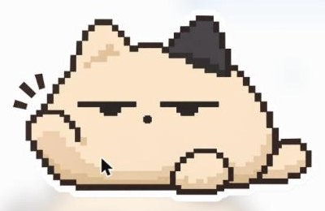
귀찮냥 8비트 픽셀 스티커 (작업실에서 만든 것)
이 그림을 만든 실제 프롬프트
프로젝트 소스의 귀찮냥_시트 캐릭터를 8비트 픽셀 아트 화풍으로 바꿔서 스티커용 그림 한 장. 생김새(찌그러진 찹쌀떡 몸, 작은 삼각 귀, 반쯤 감긴 눈, 짧은 꼬리)와 크림색·먹색은 그대로 두고 화풍만 바꿀 것. 엎드려서 한 손만 들어 인사하는 포즈. 흰 테두리를 두껍게 두른 스티커 모양, 배경은 알파 매트(투명), 글자 없이, 정사각형.
선생님이 할 것
프롬프트 · 스티커: 8비트 픽셀
[이름] 을 8비트 픽셀 아트 화풍으로 바꿔서 스티커용 그림 한 장.
생김새와 대표 색은 시트 그대로 두고 화풍만 바꿀 것.
[포즈 한 가지]. 흰 테두리를 두껍게 두른 스티커 모양, 배경은 알파 매트(투명), 글자 없이, 정사각형.
이것만 확인
화풍이 달라졌는데도 내 캐릭터로 보이나요?
대표 색이 그대로인가요?
예시 결과
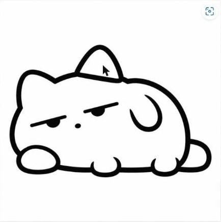
귀찮냥 에코백용 선 그림 (작업실에서 만든 것)
이 그림을 만든 실제 프롬프트
이번에는 같은 귀찮냥을 에코백에 인쇄할 검은 선 한 가지 색의 단순한 선 그림(라인 드로잉)으로 한 장 그려 줘. 생김새는 그대로 두고 화풍만 바꿀 것. 옆으로 누워 있는 포즈, 채색 없이 선만, 흰 배경, 글자 없이, 정사각형.
선생님이 할 것
프롬프트 · 에코백: 검은 선 그림
[이름] 을 에코백에 인쇄할 검은 선 한 가지 색의 단순한 선 그림(라인 드로잉)으로 한 장.
생김새는 그대로 두고 화풍만 바꿀 것.
[포즈 한 가지], 채색 없이 선만, 흰 배경, 글자 없이, 정사각형.
제품
바꿀 화풍
프롬프트에 넣을 말
스티커
8비트 픽셀
8비트 픽셀 아트 화풍으로, 흰 테두리 스티커 모양
에코백
검은 선 그림
검은 선 한 가지 색의 단순한 선 그림으로, 채색 없이
책 표지
수채화
부드러운 수채화 화풍으로, 종이 질감이 보이게
티셔츠
단색 납작 그림
색 3가지만 쓴 납작한 그림(플랫 일러스트)으로
엽서·달력
크레파스
크레파스로 그린 손그림 화풍으로
배지·키링
굵은 테두리 만화
굵은 검은 테두리의 만화 화풍으로, 색은 또렷하게
프롬프트 · 화풍 바꾸기 틀
[이름] 을 [제품]에 올릴 [바꿀 화풍] 화풍으로 한 장.
생김새와 대표 색은 시트 그대로 두고 화풍만 바꿀 것.
[포즈 한 가지], 흰 배경(또는 알파 매트), 글자 없이, 정사각형.
프롬프트 · 어울리는 화풍을 물어보기
[이름] 을 [제품]에 올리려고 해. 이 제품에 어울리는 화풍 4가지를 2×2 한 장으로 비교해서 보여 줘.
네 칸 모두 같은 포즈, 생김새와 색은 그대로. 어떤 화풍인지는 답글로 알려 줘.
알아 둘 것
화풍을 바꾼 다음 그림에서 원래 화풍으로 안 돌아오면 "다시 원래 화풍으로"라고 말해 주세요. 지침에 "화풍은 내가 바꾸라고 할 때만"을 넣은 이유입니다.
다른 회사 캐릭터나 작가 이름을 넣어 "○○ 스타일로"라고 하지 마세요. 화풍 이름(픽셀, 수채화, 선 그림)으로 주문합니다.
빨리 끝났다면
움직이는 스티커(GIF): "8비트 픽셀 [이름]이 손을 흔드는 모습. 배경은 알파 매트(투명). 동작은 하나만, 처음 자세로 돌아와 자연스럽게 반복, 카메라는 고정. gif" 픽셀 그림은 색이 적어서 GIF에 잘 맞습니다.
장면 한 장: "책 표지에 쓸 장면 아이디어 3개를 보기로 줘. 내가 고르면 세로 3:4 수채화로." 책 표지 목업에 올립니다.
9 / 11
STEP 9 · 캔바 목업으로 상품 만들어 보기
필수지금 어디인가요
필수캔바 Mockups 열기
쉽게 말하면
목업은 내 그림을 실제 상품 사진에 입혀 본 모습입니다. 캔바(Canva)의 Mockups에서 그림만 올리면 됩니다.
선생님들, 캔바에 로그인하시고 주소창에 canva.com/mockups 를 치세요. 캔바는 무료 계정으로 됩니다. 구글 계정으로 바로 가입할 수 있어요.
위쪽에 분류가 다섯 개 있습니다. 기기 화면, 인쇄물, 포장, 옷, 생활용품 순서예요.
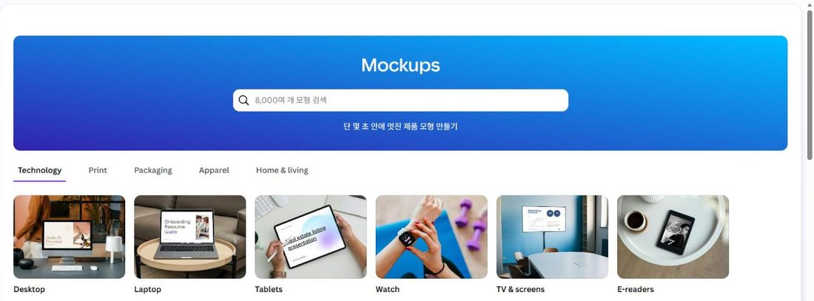
canva.com/mockups 첫 화면. 검색창과 분류 탭(Technology, Print, Packaging, Apparel, Home & living).
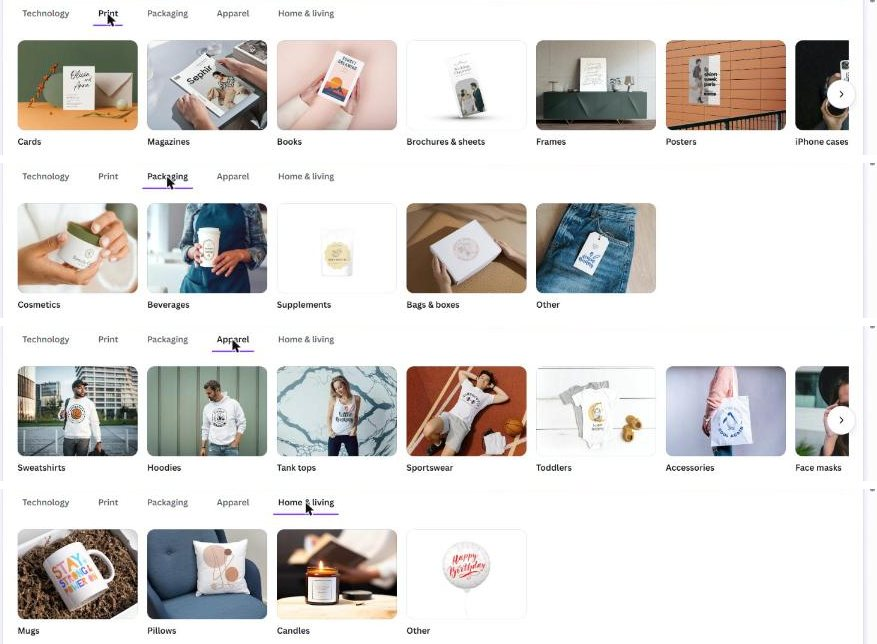
분류별로 들어 있는 것. 위에서부터 Print(카드·잡지·책·액자·포스터), Packaging(화장품·음료·가방과 상자), Apparel(맨투맨·후드·에코백), Home & living(머그·쿠션·양초).
만들 것
찾는 곳
올릴 그림
스티커
검색창에 Stickers
8비트 픽셀 스티커
에코백·가방
Apparel → Accessories / Packaging → Bags & boxes
검은 선 그림
책 표지
Print → Books
세로 장면
머그컵
Home & living → Mugs
투명 굿즈 그림
티셔츠·후드
Apparel → Sweatshirts, Hoodies
투명 굿즈 그림
휴대폰 케이스
Print → iPhone cases
포즈 그림
포스터·액자
Print → Posters, Frames
세로 장면
필수왕관 표시부터 보세요
목록에서 그림 오른쪽 아래에 왕관이 붙은 건 유료입니다. 왕관이 없는 걸 고르세요. 들어가 보면 오른쪽 위에 「무료」라고 적혀 있습니다.
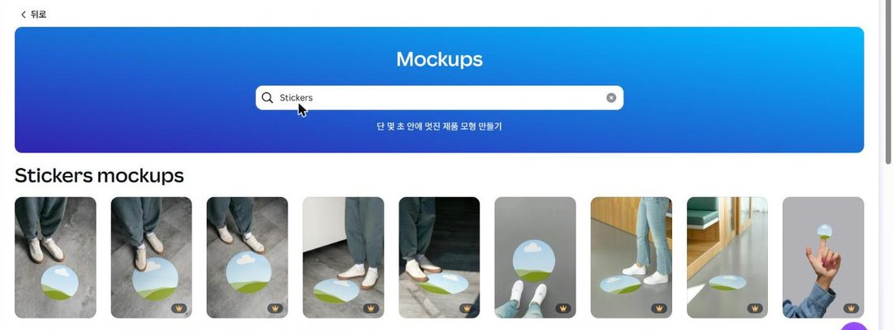
Stickers 목록. 첫 번째만 왕관이 없고 나머지는 왕관이 붙어 있습니다.
예시 결과
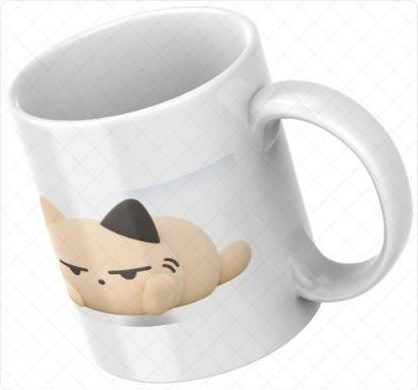
왕관 붙은 머그컵에 올려 본 결과: 워터마크(격자 무늬)가 깔립니다
선생님이 할 것
왕관 붙은 걸 골라도 그림은 올라갑니다. 대신 격자 무늬(워터마크)가 깔리고, 저장 버튼 자리에 유료 안내가 나와요. 그 아래 「워터마크가 있는 무료 모형 저장하기」로 받을 수는 있습니다. 모양만 미리 볼 때는 이것도 괜찮아요.
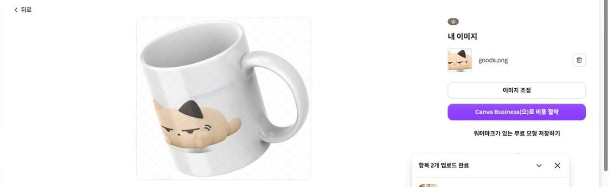
유료 목업 화면. 「Canva Business로 비용 절약」 버튼과 그 아래 「워터마크가 있는 무료 모형 저장하기」.
필수그림 올려서 목업 만들기
왕관 없는 목업을 누르고 오른쪽 선택
「이미지 선택」 창 오른쪽 위 파일 업로드 → STEP 7·8에서 저장한 그림 고르기
올라온 내 그림을 누르고 아래 다음
그림이 상품에 입혀집니다. 크기나 위치가 어색하면 이미지 조정
목업 저장
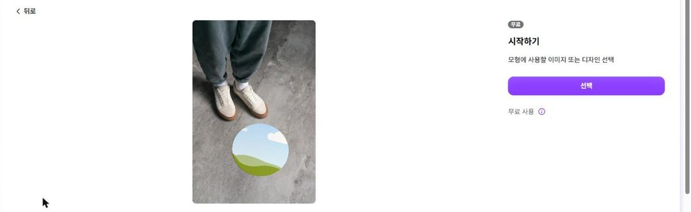
① 목업 상세 화면. 「무료」 표시를 확인하고 「선택」.
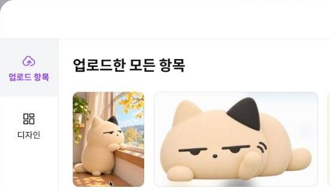
② 「이미지 선택」 창. 「파일 업로드」로 올린 그림을 누르면 「다음」이 나와요.
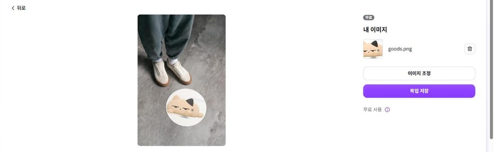
③ 스티커에 귀찮냥이 올라갔습니다. 오른쪽에 「이미지 조정」과 「목업 저장」.
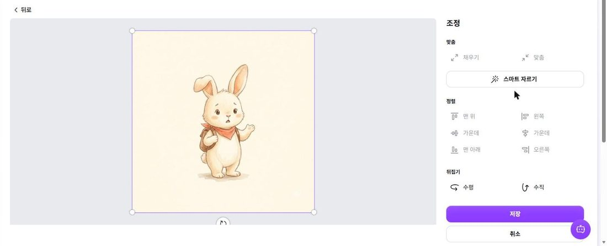
④ 「이미지 조정」. 채우기·맞춤으로 크기를, 정렬로 위치를 맞추고 「저장」.
예시 결과
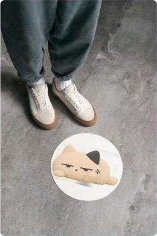
귀찮냥 바닥 스티커 목업 (무료)
선생님이 할 것
이것만 확인
캐릭터가 잘리지 않고 다 들어갔나요?
상품 색과 캐릭터 색이 겹쳐서 안 보이지 않나요?
서로 다른 상품 3개 이상: 원래 화풍 하나, 화풍 바꾼 것 하나는 꼭 넣어 보세요.
알아 둘 것
「목업 저장」을 누른 뒤 내려받는 방법은 수업에서 같이 봅니다.
예시 스티커는 흰 바탕 그림을 올린 것이라 동그란 스티커 안이 하얗게 보입니다.
막힐 때
그림이 너무 작게 들어가면: 「이미지 조정」에서 채우기를 누르세요.
캐릭터가 한쪽으로 쏠리면: 정렬에서 가운데를 두 번(가로, 세로) 누르세요.
빨리 끝났다면
세트로 맞추기: 머그컵, 에코백, 스티커를 나란히 놓으면 내 브랜드 세트가 됩니다.
책 표지: Print → Books에 세로 장면을 올려 보세요.
움직이는 목업: 캔바 편집 화면의 앱에서 Mockups를 열면 동영상 목업도 있습니다. 김에듀의 「캔바로 목업 만들기」 페이지 STEP 5를 참고하세요.
10 / 11
마무리
필수오늘 만든 것
이것만 확인
3×3 판(반측면·측면·뒷모습)
빈손 캐릭터 시트 1장, 표정 6종 1장
참고 이미지에 올라간 내 캐릭터
지침과 시트가 든 작업실
포즈 모음과 굿즈용 포즈
투명 굿즈 그림 1장, 화풍 바꾼 그림 1장
캔바 목업 3개 이상
선생님들, 오늘 캐릭터가 그림에서 상품이 됐습니다. 그리고 그보다 큰 게 하나 생겼어요. 작업실입니다. 이제 내 캐릭터 일은 전부 그 방에서 하시면 됩니다.
집에서는 작업실에 들어가서 STEP 6의 포즈 프롬프트를 세 개만 더 돌려 보세요. 이름만 써도 내 캐릭터가 나오는 걸 한 번 더 느껴 보시면 됩니다.
필수다음 시간
다음 주에는 내 캐릭터가 광고 모델이 됩니다. 오늘 만든 작업실에서 뷰·샷·앵글로 대표 광고 그림을 만들고, 같은 광고를 인스타그램 피드, 스토리, 가로 배너 크기로 바꿔 봅니다. 오늘 만든 목업도 광고 안에 들어가요.